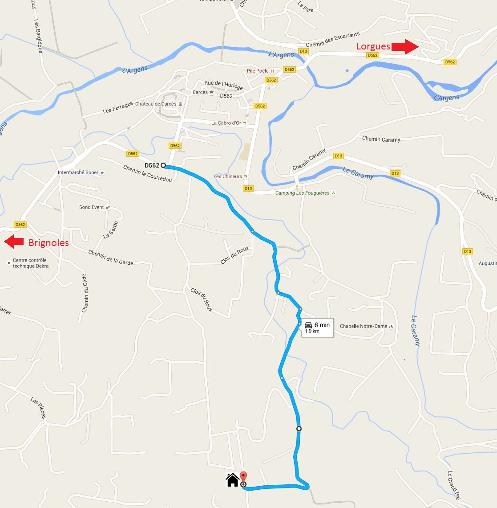

Lei Cadé - Arrivée
Nous vous remcercions d'avoir choisi Lei Cadé pour votre séjour en Provence verte.
Ci-dessous vous trouverez les quelques informations pratiques qui vous seront nécessaires lors de votre arrivée à Carcès.
Localisation:
Tout d'abord, l'adresse de la maison (43.46299, 6.18362):
697, chemin de Bagateau
83570 Carcès
Itinéraire:
Le plan ci-dessous vous indique l'itinéraire pour accéder à la maison à partir la route principale (D562).
IMPORTANT - Consignes d'arrivée:
Madame Catherine Zimmermann et/ou Monsieur Daniel Dudzinski de CD Home Services vous attendront à la maison pour vous remettre les clés et faire le tour du propriétaire. Ils seront également votre point de contact pour tout problème durant votre séjour.
Dès que possible avant le début de votre séjour, nous vous demanderons de les informer par email de l'heure approximative de votre arrivée.
Le jour de votre arrivée, nous vous demanderons de les contacter par téléphone environ une demi-heure avant votre arrivée afin qu'ils puissent être présents pour vous accueillir.
- Mrs Catherine Zimmermann: +33 6 30310012
- Mr Daniel Dudzinski: +33 6 11345243
- Email: cdhomeservices83@gmail.com
La caution en liquide ou en chèque sera à remettre à CD Home Services.